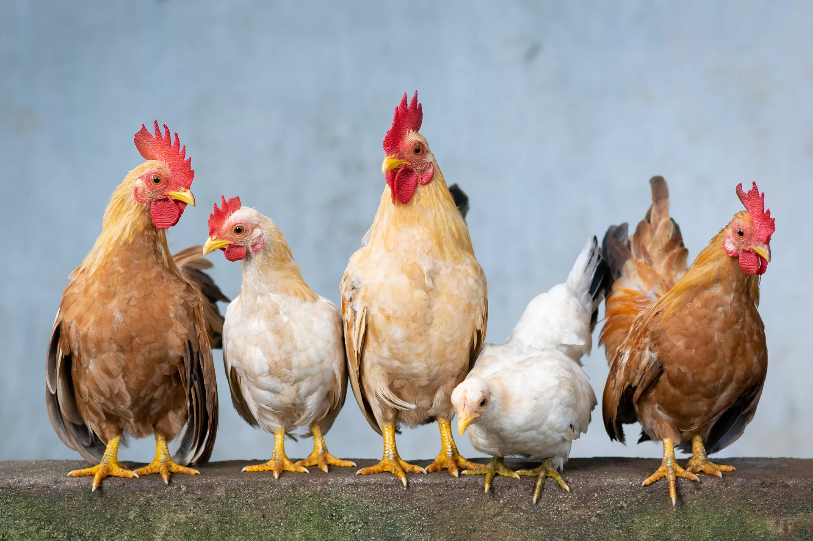

 Apesar de poderem voar, galinhas, galos e frangos não tem a capacidade de cruzar os céus como acontece com pombos, águias ou urubus, pois as adaptações biológicas que possuem, principalmente seus ossos pneumáticos, seus sacos aéreos e sua musculatura, são menos desenvolvidos do que nessas aves. Além disso, os animais domesticados costumam ser mais gordos do que as espécies selvagens, principalmente as galinhas, que botam de um a dois ovos todos os dias, enquanto que as aves não domésticas põem, em média três vezes por ano. A capacidade limitada de voo também está relacionada aos hábitos terrícolas, ou seja, essas aves passam a maior parte do tempo no chão, onde encontram alimentos como sementes, minhocas e insetos, e não precisam alcançar locais muito altos para conseguir comida.